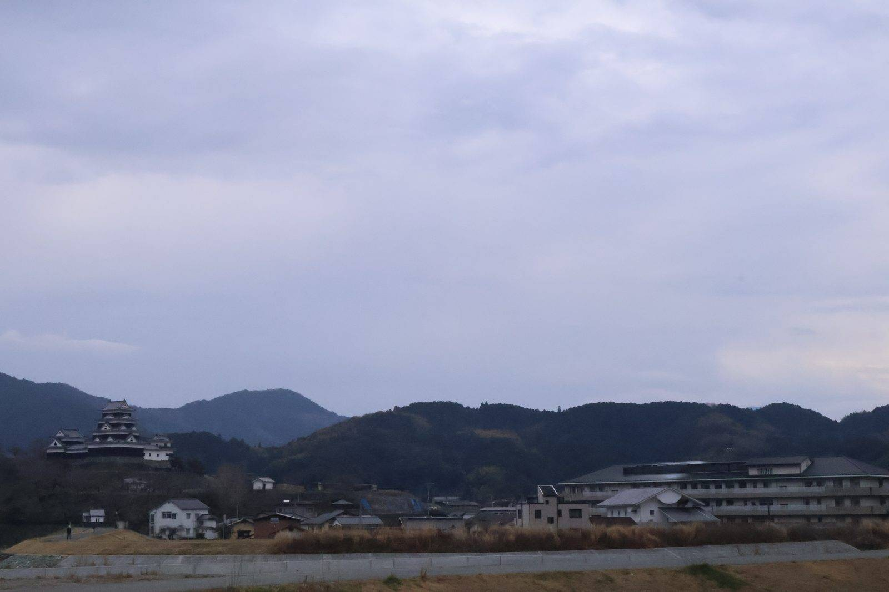

大洲の視点 ・ 出典: 大洲市役所（住民基本台帳、情報源日付: 2026/03/31） ・ 約2分で読める

要点
以前、統計書の人口推移（78,319人→40,575人）の記事を書いたけど、あれは令和２年国勢調査の数字。
もっと新しい「住民基本台帳」（令和８年３月31日現在）を見つけたので、こちらも読んでみた。
それによると、大洲市の総人口は37,931人（男18,357人・女19,574人）、世帯数19,231。
国勢調査の数字よりさらに減っていて、集計の時点や方法が違うとはいえ、減少傾向自体は変わらないみたい。
面白かったのが地区別の内訳。合併前の「大洲」地区だけで30,625人と、全体の８割以上を 占めている。
2005年の合併で加わった長浜地区は5,185人、肱川地区は1,651人、河辺地区にいたっては470人しかいない。
３地域を合わせても市全体の６分の１程度で、人口という意味では「大洲地区が主で、長浜・肱川・河辺が 従」という構図がはっきり見える。
河辺地区の中でも、大伍（72人）や北平（116人）のように、集落単位で見るとかなり少ない数字の 地域もあった。
合併して１つの「大洲市」になったとはいえ、地域ごとの人口規模の差はかなり大きいんだなと、 数字を見て改めて実感した。
同じ資料には、大洲地区（合併前の旧大洲市にあたるエリア）をさらに14の「行政区」に分けた 内訳も載っていた。多い順に並べるとこうなる。
一番多いのは「喜多」で6,219人。大洲地区全体（30,625人）の２割にあたって、２位の「平」（3,958人）と比べても頭一つ抜けている。
大洲市立喜多小学校の住所を調べてみると「大洲市若宮」で、大洲城や大洲市役所にも近いエリア。
旧大洲市の中でも、やっぱり城下町の中心市街地に人が集まっているんだなというのが、この数字から見えてきた。
調べていて面白かったのが、「喜多」という名前の由来。実はこれ、この地区だけの呼び名ではない。
西暦866年（貞観８年）、宇和郡の北部が分立してできた郡の名前がそのまま「喜多郡」で、合併前の大洲市はまるごとこの喜多郡に属していた。
「北」を意味する「きた」に、縁起の良い「喜多」の字を当てたのが由来とされている。
1,000年以上前の郡名が、人口最多の地区名としてそのまま今も残っているというのは、なかなか面白い話だと思う。
正直に書いておくと、「喜多」という行政区の正確な境界線（どこからどこまでか）までは、今回の資料だけでは確認しきれなかった。
中心市街地寄りのエリアだろう、という推測にとどまる部分があることは、あわせて書いておきたい。
この記事をサイトに掲載した日: 2026/07/27